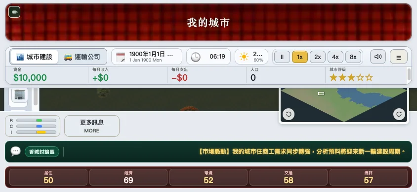
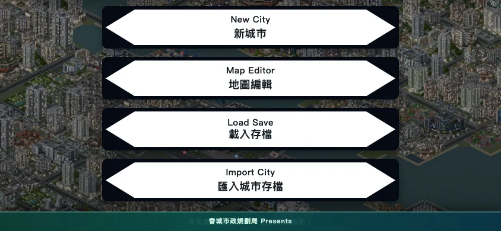

✅ 已凍結（2026-11-11，Norton 批准） — Phase B 功能按本稿實作；之後改稿須經 Norton 同意，並同步更新 docs/mobile-ui-work-plan.md。
規格 §6.6 要求「先審設計稿、後寫功能」。本稿為靜態 HTML/CSS（不屬遊戲代碼，亦不會上線），沿用遊戲現有 --ui-* 色彩、名牌貼圖、墨綠走馬燈、工具名稱與成本。橫向 844×390、直向 390×844 都提供完整現有建造功能（決定 2；2026-11-12 Norton 真機回饋修訂）。圖示以 emoji 暫代，實作時沿用遊戲原圖示。
2026-11-12 Norton 授權修訂：直向保留常駐底欄，建造確認列分兩行（P5）；橫向側欄背景貼邊、內容避開瀏海／圓角安全區，收放條避開側欄。
以下係真實 Electron（v5.5.1）將視窗設為 844×390 嘅截圖。頂欄量度為 179px（佔高度 46%）、左側工具列 274px 高、走馬燈 44px，可見地圖約 25%（未計小地圖遮擋），所以唔可以用「縮細桌面 UI」解決。


| 畫面（844×390） | 地圖可用區 | 計算 | 規格目標 |
|---|---|---|---|
| 現況桌面 UI | ≈ 25% | (844−80)×(286−179) ÷ (844×390)，未計小地圖 | — |
| 新：常態 HUD（底欄收起，預設） | 89% | (390−44) ÷ 390；收放條為浮層 | — |
| 新：底欄展開 | 75% | (390−44−52) ÷ 390 | — |
| 新：建造預覽（含 context 列） | 63% | (390−44−44−56) ÷ 390；微調鍵為浮層，不扣面積 | ≥ 60% |
| 新：右側面板開啟（底欄自動收起） | ≈ 58% | (844−288)÷844 × (390−44)÷390；面板可一按關閉 | 規格只要求庫關閉／預覽時 ≥ 60% |
The City of Heung Shing · v5.5.1
瀏覽器儲存空間已滿（或被封鎖），最新進度未有寫入。城市仍喺記憶體入面，但關閉頁面後會遺失。請先下載備份檔，再清理空間或換瀏覽器。
The City of Heung Shing · v5.5.1
已凍結。Phase A（輸入安全）完成後，Phase B1 開始寫 tool-actions.js／build-session.js。稿內示例數據（站名、覆蓋率、人手、指數）只供布局用途。